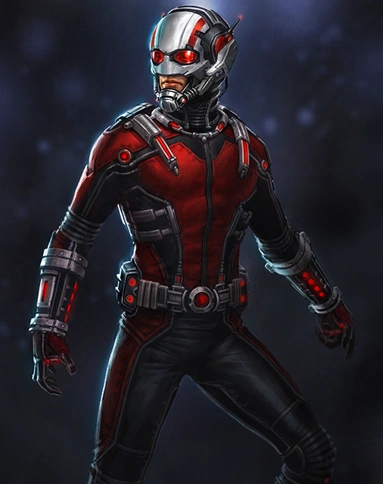

1. Capitã Marvel

A Capitã Marvel, também conhecida como Carol Danvers, é uma personagem icônica no universo dos quadrinhos
da Marvel. Sua história remonta à década de 1960, quando foi introduzida como a oficial de inteligência
da Força Aérea dos Estados Unidos, trabalhando ao lado do herói original Capitão Marvel, Mar-Vell. No
entanto, sua trajetória ganhou destaque quando ela adquiriu seus poderes.
Carol Danvers se tornou a Capitã Marvel após um incidente com uma máquina alienígena chamada
Psyche-Magnitron. Durante uma batalha entre o Capitão Marvel e o vilão Yon-Rogg, Danvers foi atingida
pela explosão do dispositivo, fundindo seu DNA com o de Mar-Vell e concedendo a ela poderes
sobre-humanos. Esse evento marcou o início de uma nova fase em sua vida, transformando-a em uma das
heroínas mais poderosas do universo Marvel.
As habilidades da Capitã Marvel são vastas e impressionantes. Ela possui força sobre-humana, velocidade
aprimorada, resistência a danos físicos e uma capacidade de regeneração acelerada. Além disso, Carol
Danvers é capaz de voar e tem a habilidade de manipular energia cósmica, emitindo explosões de energia
poderosas. Sua conexão com a Energia de Fóton, uma fonte cósmica de poder, amplifica suas habilidades e
a torna uma combatente formidável.
A Capitã Marvel desempenhou papéis cruciais em várias sagas e eventos importantes no universo Marvel,
incluindo "Guerra Kree-Skrull" e "Desafio Infinito". Sua liderança e coragem a colocaram no centro de
muitas equipes de super-heróis, como os Vingadores. Ao longo dos anos, Carol Danvers se tornou um
símbolo de empoderamento feminino, sendo reconhecida não apenas por suas proezas heroicas, mas também
por sua determinação e resiliência diante de desafios pessoais e intergalácticos.
Além das páginas dos quadrinhos, a Capitã Marvel ganhou destaque no universo cinematográfico da Marvel,
sendo interpretada por Brie Larson. Sua presença nos filmes contribuiu para popularizar ainda mais a
personagem e inspirar uma nova geração de fãs. A saga da Capitã Marvel continua a evoluir, deixando uma
marca duradoura no vasto legado dos super-heróis da Marvel.
2. Homem Aranha

Peter Parker, mais conhecido como o Homem-Aranha, é uma das figuras mais icônicas do universo dos
super-heróis da Marvel. Sua história começa em Amazing Fantasy #15, publicada pela Marvel Comics em
1962, criada por Stan Lee e Steve Ditko. Peter Parker era um estudante tímido e brilhante, órfão criado
por sua tia May e tio Ben. Sua vida mudou drasticamente quando, durante uma visita a uma exposição
científica, foi picado por uma aranha radioativa, adquirindo habilidades aracnídeas extraordinárias.
As habilidades do Homem-Aranha incluem força sobre-humana, agilidade, reflexos aprimorados e a
capacidade de aderir a superfícies, graças a seus pelos corporais modificados. Além disso, ele possui um
"sentido de aranha", uma espécie de intuição que o alerta sobre perigos iminentes. Essas habilidades,
combinadas com sua inteligência excepcional, tornam-no um dos super-heróis mais versáteis e formidáveis.
A dualidade entre a vida pessoal de Peter Parker e seu papel como Homem-Aranha é uma característica
central de sua narrativa. Ele enfrenta desafios financeiros, luta para equilibrar seus relacionamentos
e, ao mesmo tempo, assume a responsabilidade de proteger Nova York como o famoso herói. A morte trágica
de seu tio Ben, cujas palavras "Com grandes poderes vêm grandes responsabilidades" se tornaram um lema,
moldou o sentido de dever e moralidade do Homem-Aranha.
Ao longo dos anos, o Homem-Aranha tornou-se parte integrante do Universo Marvel, interagindo com outros
super-heróis e enfrentando uma galeria impressionante de vilões, como o Duende Verde, o Doutor Octopus e
Venom. Sua adaptabilidade e engenhosidade na criação de dispositivos tecnológicos para combater o crime
adicionam camadas fascinantes à sua personalidade.
Além das páginas dos quadrinhos, o Homem-Aranha conquistou popularidade em diversas mídias, incluindo
séries animadas, filmes e jogos. O personagem é representado em diferentes idades e fases da vida,
destacando sua atemporalidade e apelo universal. O sucesso do Homem-Aranha é um testemunho não apenas de
seu design cativante, mas também da narrativa rica que explora as complexidades da vida de Peter Parker
e as responsabilidades que vêm com seus extraordinários poderes.
3. Homem-Formiga
Nos confins do Universo Cinematográfico da Marvel, um herói de estatura única se destaca, trazendo
consigo uma história fascinante e habilidades extraordinárias: o Homem-Formiga. Criado pelos mestres da
Marvel Comics, Stan Lee, Larry Lieber e Jack Kirby, o Homem-Formiga fez sua estreia nas páginas dos
quadrinhos em 1962, na revista "Tales to Astonish" #27.
O alter ego por trás da icônica roupa do Homem-Formiga é o Dr. Henry Pym, um brilhante bioquímico que
descobre uma substância que lhe confere a capacidade de alterar seu tamanho. Com sua invenção
revolucionária, chamada de Partículas Pym, Pym consegue encolher até o tamanho de uma formiga ou crescer
a alturas impressionantes. Ao lado de sua parceira e eventual esposa, Janet Van Dyne, que assume o papel
da Vespa, o Homem-Formiga se torna parte fundamental dos Vingadores, a equipe de super-heróis da Marvel.
Ao longo dos anos, o manto do Homem-Formiga foi passado para outros personagens, incluindo Scott Lang,
um ex-criminoso que busca redenção ao assumir o papel do diminuto herói. Lang traz uma abordagem única à
persona, destacando-se pela sua astúcia e senso de humor.
No cinema, o Homem-Formiga ganhou vida através do ator Paul Rudd, que interpretou Scott Lang nos filmes
do Universo Cinematográfico da Marvel. A trilogia "Homem-Formiga" explora a jornada do personagem, desde
suas origens como ladrão até seu papel essencial nas batalhas contra ameaças intergalácticas.
Quanto às habilidades extraordinárias, a capacidade de encolhimento do Homem-Formiga vai além do simples
ato de diminuir de tamanho. Ele mantém sua força e agilidade, tornando-se um formidável adversário mesmo
quando reduzido a dimensões microscópicas. Além disso, sua aptidão para controlar formigas,
utilizando-as como aliadas estratégicas, adiciona uma camada única às suas habilidades, transformando o
aparentemente diminuto herói em uma força a ser reconhecida.
O Homem-Formiga, com sua história cativante e habilidades distintas, continua a ser uma peça chave no
vasto quebra-cabeça do Universo Cinematográfico da Marvel, provando que a verdadeira grandeza muitas
vezes reside na capacidade de superar obstáculos, independentemente do tamanho.
4. Pantera Negra

O Pantera Negra, cujo nome civil é T'Challa, é um dos mais icônicos super-heróis da Marvel Comics. Criado
por Stan Lee e Jack Kirby, o personagem fez sua primeira aparição em "Fantastic Four" #52, em julho de
1966. T'Challa é o rei da fictícia nação africana de Wakanda, um reino tecnologicamente avançado e rico
devido à presença do precioso metal vibranium.
A história do Pantera Negra está intrinsecamente ligada à ascensão ao trono de Wakanda. Após a morte de
seu pai, T'Challa assume a responsabilidade de liderar sua nação, tornando-se simultaneamente o soberano
e o lendário protetor, o Pantera Negra. Sua ascensão não é apenas um título real, mas uma posição de
grande importância, já que Wakanda é frequentemente alvo de ameaças externas devido à valiosa commodity
que possui.
Uma das características distintivas do Pantera Negra é o traje feito de vibranium, que não apenas
confere força e durabilidade sobre-humanas, mas também absorve a energia de ataques, tornando-o
virtualmente invulnerável. Além disso, T'Challa é um mestre em artes marciais, estrategista brilhante e
possui sentidos aguçados aprimorados por uma erva especial de Wakanda.
Ao longo dos anos, o Pantera Negra tornou-se um ícone não apenas nos quadrinhos, mas também nas telas de
cinema. A representação do personagem por Chadwick Boseman no Universo Cinematográfico Marvel (UCM)
trouxe uma dimensão única e inspiradora ao herói. O filme solo "Pantera Negra", lançado em 2018,
dirigido por Ryan Coogler, foi um marco cultural, recebendo aclamação crítica e sucesso de bilheteria.
A narrativa do Pantera Negra estende-se além das páginas dos quadrinhos e das telas de cinema. Ele
representa não apenas um super-herói, mas também um símbolo de liderança, identidade cultural e
resistência. A riqueza da mitologia wakandiana e a complexidade do personagem contribuíram para
solidificar o lugar do Pantera Negra como uma figura central e inspiradora dentro do universo Marvel.
5. Thor

Thor, uma figura mitológica e também um dos mais proeminentes super-heróis da Marvel Comics, tem suas
raízes profundamente entrelaçadas na mitologia nórdica. Filho de Odin, o poderoso deus do trovão, e
herdeiro do reino celestial de Asgard, Thor é conhecido por sua força sobre-humana, destreza em combate
e seu martelo encantado, o Mjolnir.
A história de Thor transcende mitos e lendas, encontrando seu caminho nos quadrinhos nos anos 60, pelas
mãos do lendário escritor Stan Lee, do desenhista Jack Kirby e do roteirista Larry Lieber. Sua estreia
ocorreu em "Journey into Mystery" #83 em 1962. A versão da Marvel reinterpretou o deus nórdico como um
poderoso defensor da justiça na Terra, misturando elementos míticos com a narrativa moderna dos
super-heróis.
Um dos elementos mais icônicos de Thor é o Mjolnir, um martelo indestrutível forjado a partir de um
metal místico chamado Uru. Além de ser uma arma formidável, o Mjolnir concede a Thor o poder de
controlar o trovão e relâmpagos, permitindo-lhe manipular as forças da natureza. No entanto, o Mjolnir
também possui uma característica peculiar: só aqueles que são verdadeiramente dignos podem empunhá-lo.
Essa condição adiciona uma dimensão interessante à identidade do personagem.
Ao longo das décadas, Thor evoluiu como personagem, enfrentando desafios cósmicos e terrestres. Ele
desempenhou papéis cruciais em eventos épicos da Marvel, como a "Guerra Civil" e "Ragnarok". Sua
complexa relação com seu irmão adotivo, Loki, adiciona nuances emocionais à sua jornada, destacando o
conflito entre dever divino e lealdade familiar.
Além dos quadrinhos, Thor ganhou popularidade massiva graças à sua adaptação para o cinema no Universo
Cinematográfico Marvel (UCM). O ator Chris Hemsworth personificou magistralmente o deus do trovão,
trazendo carisma e humor à interpretação do personagem.
Em termos de habilidades, Thor é um guerreiro formidável com habilidades de combate excepcionais, uma
força sobre-humana que rivaliza com a de outros super-heróis, e a capacidade de voar usando seu martelo.
Sua longevidade, derivada de sua herança divina, o torna um dos personagens mais duradouros da mitologia
Marvel.
Em suma, a história e as habilidades de Thor o colocam no panteão dos super-heróis mais memoráveis. Sua
jornada épica, seja nos quadrinhos, no cinema ou em outras formas de mídia, continua a cativar e
inspirar fãs ao redor do mundo.
6. Capitão América

O Capitão América, um dos mais icônicos super-heróis da Marvel Comics, foi criado por Joe Simon e Jack
Kirby e fez sua primeira aparição em "Captain America Comics" #1, lançado em março de 1941. Steve
Rogers, o homem por trás do escudo, começou sua jornada como um jovem franzino durante a Segunda Guerra
Mundial, determinado a servir seu país. Rejeitado pelos recrutadores militares devido à sua condição
física, Rogers se tornou voluntário em um experimento chamado Projeto Renascimento, liderado pelo Dr.
Abraham Erskine.
O experimento, destinado a criar super-soldados, transformou Steve Rogers em uma versão aprimorada de si
mesmo. Sua força, agilidade e resistência foram elevadas ao ápice humano. Equipado com um escudo feito
de vibranium, o Capitão América emergiu como uma arma formidável contra as forças do Eixo. Sua primeira
missão foi derrotar o vilão Caveira Vermelha, um agente nazista com ambições de dominação mundial.
Ao longo dos anos, o Capitão América evoluiu como um símbolo de heroísmo, valores morais e patriotismo.
Seu compromisso inabalável com a justiça o destacou como líder dos Vingadores, uma equipe de
super-heróis que defende o mundo contra ameaças cósmicas e terrestres. Além de suas habilidades físicas
excepcionais, o Capitão América é conhecido por sua inteligência estratégica e habilidades de combate
aprimoradas.
O escudo do Capitão América, feito de vibranium, não apenas serve como uma defesa impenetrável, mas
também pode ser arremessado com precisão letal. Sua habilidade de liderança e capacidade de inspirar
outros tornam-no uma figura central no Universo Marvel. Ao longo das décadas, várias encarnações de
Steve Rogers e outros personagens assumiram o manto do Capitão América, cada um contribuindo para a rica
mitologia do personagem.
Além dos quadrinhos, o Capitão América conquistou popularidade massiva através de adaptações para o
cinema, interpretado por Chris Evans no Universo Cinematográfico Marvel. A trajetória do Capitão
América, desde sua origem durante a Segunda Guerra Mundial até seus desafios modernos, continua a
cativar e inspirar gerações de fãs, consolidando seu lugar como um ícone duradouro no mundo dos
super-heróis.
7. Homem-de-Ferro

Tony Stark, também conhecido como Homem de Ferro, é um dos personagens mais icônicos do universo Marvel.
Criado por Stan Lee, Larry Lieber, Don Heck e Jack Kirby, o Homem de Ferro fez sua primeira aparição em
"Tales of Suspense" #39, em 1963. A história de Tony Stark é uma jornada fascinante que mistura
genialidade tecnológica, redenção pessoal e heroísmo.
Tony Stark, um brilhante empresário e engenheiro, herda a Stark Industries, uma empresa de tecnologia e
armamentos. Sua vida toma um rumo dramático quando ele é capturado por terroristas e forçado a construir
uma arma de destruição em massa. Em vez disso, Stark utiliza sua inteligência para criar uma armadura
poderosa, não apenas para escapar, mas para se tornar o vigilante tecnologicamente avançado conhecido
como Homem de Ferro.
As habilidades do Homem de Ferro são vastas e impressionantes. Sua armadura é uma obra-prima
tecnológica, equipada com uma variedade de recursos, como propulsores a jato que concedem voo,
repulsores de energia que servem como armas, e uma resistência capaz de suportar ataques poderosos. A
armadura evolui ao longo do tempo, incorporando tecnologia cada vez mais avançada e módulos
especializados para enfrentar ameaças específicas.
Além das proezas tecnológicas, o verdadeiro poder de Tony Stark reside em sua inteligência
extraordinária. Ele é um gênio, um inventor e um estrategista brilhante, capaz de superar desafios
aparentemente insuperáveis. Sua habilidade em combinar ciência e engenharia com coragem e determinação o
torna uma força formidável no mundo dos super-heróis.
A trajetória de Stark também explora sua jornada pessoal. Inicialmente retratado como um playboy
egocêntrico, ele enfrenta desafios que o obrigam a refletir sobre suas ações. Seu arco de redenção e
transformação em um herói comprometido com o bem-estar do mundo é uma parte fundamental de sua
narrativa.
O Homem de Ferro se destaca não apenas como um super-herói, mas como um símbolo de como a inteligência e
a tecnologia podem ser usadas para o bem. Seja liderando os Vingadores ou enfrentando inimigos
poderosos, Tony Stark personifica a coragem e a determinação que definem os verdadeiros heróis. Sua
história continua a cativar fãs em todo o mundo, deixando um legado duradouro no universo Marvel.